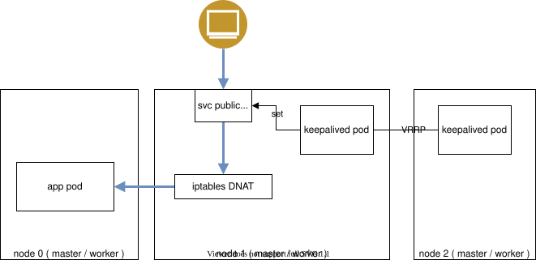
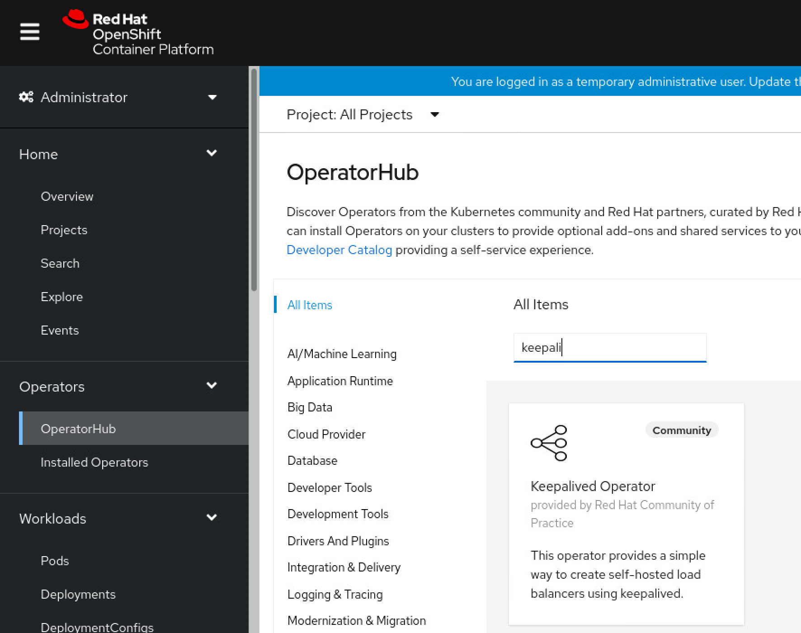
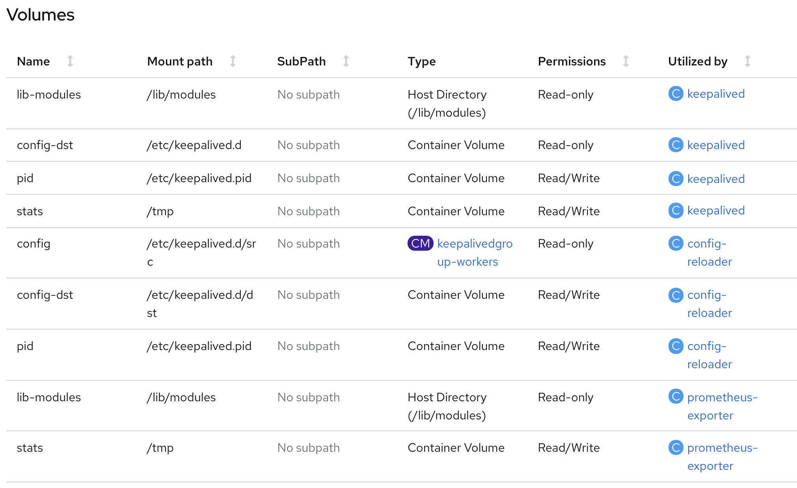
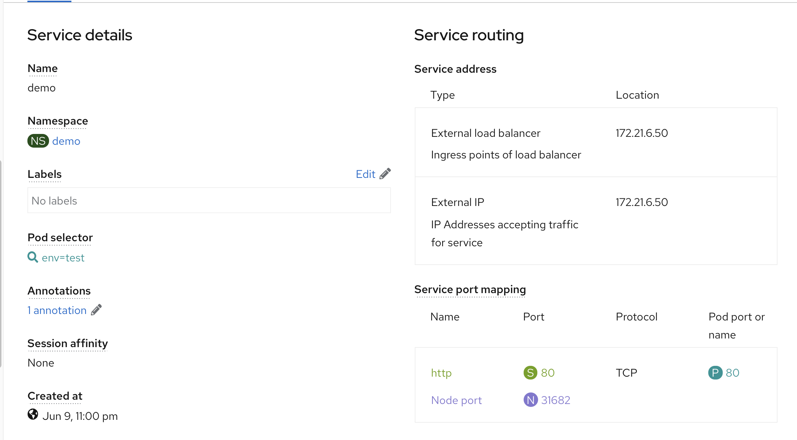
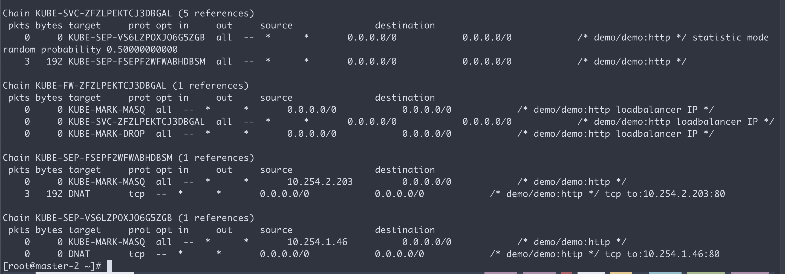

keepalived operator in openshift4
痛点
openshift4 标准安装，使用router(haproxy)来做ingress，向集群导入流量，这么做，默认只能工作在7层，虽然也有方法进行定制，让他工作在4层，但是不管从对外暴露的IP地址的可管理性，以及应用端口冲突处理方面来说，都非常不方便。
根本原因，其实是openshift4 私有化安装不支持 LoadBalancer 这个service type。 那么今天我们就找了 keepalived operator，来弥补这个缺陷。
视频讲解:
本文，参考openshift blog上的文章
- https://www.openshift.com/blog/self-hosted-load-balancer-for-openshift-an-operator-based-approach
- https://github.com/redhat-cop/keepalived-operator
试验架构图

可以看到，keepalived，会在节点上，根据service的定义，创建second IP，然后外部流量，就从这个IP地址，进入集群。这是一种k8s LoadBalancer 的实现方式，和ingress controller的方式对比，就是天然支持tcp模式的4层转发。
安装keepalived operator很简单

在web界面操作完了，需要标记节点，已经调整一下权限
oc label node master-2 node-role.kubernetes.io/loadbalancer=""
oc label node master-1 node-role.kubernetes.io/loadbalancer=""
oc adm policy add-scc-to-user privileged -z default -n keepalived-operator接下来，我们来看看keepalived的部署有什么特殊的地方。
我们可以看到 keepalived pod 使用了 hostnetwork 和 privileged: true。 但是keepalived pod 没有挂载特殊的主机目录。

测试部署一个应用
cat << 'EOF' > /data/install/network-patch.yaml
spec:
externalIP:
policy:
allowedCIDRs:
- ${ALLOWED_CIDR}
autoAssignCIDRs:
- "${AUTOASSIGNED_CIDR}"
EOF
# export VERSION="4.9.4"
# export BINARY="yq_linux_amd64"
# wget https://github.com/mikefarah/yq/releases/download/${VERSION}/${BINARY} -O /usr/local/bin/yq && chmod +x /usr/local/bin/yq
# 24 256
# 25 128
# 26 64
# 27 32
# 28 16
cd /data/install
export ALLOWED_CIDR="172.21.6.33/27"
export AUTOASSIGNED_CIDR="172.21.6.33/27"
oc patch network cluster -p "$(envsubst < ./network-patch.yaml | yq eval -j -)" --type=merge
oc get network cluster -o yaml
# spec:
# clusterNetwork:
# - cidr: 10.254.0.0/16
# hostPrefix: 24
# externalIP:
# autoAssignCIDRs:
# - 172.21.6.33/27
# policy:
# allowedCIDRs:
# - 172.21.6.33/27
# networkType: OpenShiftSDN
# serviceNetwork:
# - 172.30.0.0/16
# status:
# clusterNetwork:
# - cidr: 10.254.0.0/16
# hostPrefix: 24
# clusterNetworkMTU: 1450
# networkType: OpenShiftSDN
# serviceNetwork:
# - 172.30.0.0/16
oc new-project demo
cat << EOF > /data/install/demo.yaml
---
apiVersion: v1
kind: Pod
metadata:
name: test-0
labels:
env: test
spec:
restartPolicy: OnFailure
nodeSelector:
kubernetes.io/hostname: 'master-0'
containers:
- name: php
image: "quay.io/wangzheng422/php:demo.02"
---
apiVersion: v1
kind: Pod
metadata:
name: test-1
labels:
env: test
spec:
restartPolicy: OnFailure
nodeSelector:
kubernetes.io/hostname: 'master-2'
containers:
- name: php
image: "quay.io/wangzheng422/php:demo.02"
---
kind: Service
apiVersion: v1
metadata:
name: demo
annotations:
keepalived-operator.redhat-cop.io/keepalivedgroup: keepalived-operator/keepalivedgroup-workers
spec:
type: LoadBalancer
ports:
- name: "http"
protocol: TCP
port: 80
targetPort: 80
selector:
env: test
EOF
oc create -n demo -f /data/install/demo.yaml
# to restore
oc delete -n demo -f /data/install/demo.yaml分析一下应用的行为
看看service的配置，能看到已经分配了对外的IP

oc get svc
# NAME TYPE CLUSTER-IP EXTERNAL-IP PORT(S) AGE
# demo LoadBalancer 172.30.203.237 172.21.6.50,172.21.6.50 80:31682/TCP 14m
curl http://172.21.6.50/
# Hello!<br>Welcome to RedHat Developer<br>Enjoy all of the ad-free articles<br>master-2 上面，相关的iptables 配置
0 0 KUBE-FW-ZFZLPEKTCJ3DBGAL tcp -- * * 0.0.0.0/0 172.21.6.50 /* demo/demo:http loadbalancer IP */ tcp dpt:80可以看到，svc的防火墙策略，分流到了pod

keepalived pods definition
we can see, it use hostnetwork and privileged: true
kind: Pod
apiVersion: v1
metadata:
generateName: keepalivedgroup-workers-
annotations:
openshift.io/scc: privileged
selfLink: /api/v1/namespaces/keepalived-operator/pods/keepalivedgroup-workers-fgzv8
resourceVersion: '2700532'
name: keepalivedgroup-workers-fgzv8
uid: 1addc7c7-4e6d-49c7-ae5e-3a4e2963755b
creationTimestamp: '2021-06-09T08:51:40Z'
namespace: keepalived-operator
ownerReferences:
- apiVersion: apps/v1
kind: DaemonSet
name: keepalivedgroup-workers
uid: dba36a9c-f2aa-4951-aa60-a3836275ae1b
controller: true
blockOwnerDeletion: true
labels:
controller-revision-hash: 7459c85f64
keepalivedGroup: keepalivedgroup-workers
pod-template-generation: '1'
spec:
nodeSelector:
node-role.kubernetes.io/loadbalancer: ''
restartPolicy: Always
initContainers:
- resources: {}
terminationMessagePath: /dev/termination-log
name: config-setup
command:
- bash
- '-c'
- /usr/local/bin/notify.sh
env:
- name: file
value: /etc/keepalived.d/src/keepalived.conf
- name: dst_file
value: /etc/keepalived.d/dst/keepalived.conf
- name: reachip
- name: create_config_only
value: 'true'
securityContext:
runAsUser: 0
imagePullPolicy: Always
volumeMounts:
- name: config
readOnly: true
mountPath: /etc/keepalived.d/src
- name: config-dst
mountPath: /etc/keepalived.d/dst
terminationMessagePolicy: File
image: 'quay.io/redhat-cop/keepalived-operator:latest'
serviceAccountName: default
imagePullSecrets:
- name: default-dockercfg-2d5d5
priority: 0
schedulerName: default-scheduler
hostNetwork: true
enableServiceLinks: false
affinity:
nodeAffinity:
requiredDuringSchedulingIgnoredDuringExecution:
nodeSelectorTerms:
- matchFields:
- key: metadata.name
operator: In
values:
- master-1
terminationGracePeriodSeconds: 30
shareProcessNamespace: true
preemptionPolicy: PreemptLowerPriority
nodeName: master-1
securityContext: {}
containers:
- resources: {}
terminationMessagePath: /dev/termination-log
name: keepalived
command:
- /bin/bash
env:
- name: POD_NAME
valueFrom:
fieldRef:
apiVersion: v1
fieldPath: metadata.name
securityContext:
privileged: true
imagePullPolicy: Always
volumeMounts:
- name: lib-modules
readOnly: true
mountPath: /lib/modules
- name: config-dst
readOnly: true
mountPath: /etc/keepalived.d
- name: pid
mountPath: /etc/keepalived.pid
- name: stats
mountPath: /tmp
terminationMessagePolicy: File
image: registry.redhat.io/openshift4/ose-keepalived-ipfailover
args:
- '-c'
- >
exec /usr/sbin/keepalived --log-console --log-detail --dont-fork
--config-id=${POD_NAME} --use-file=/etc/keepalived.d/keepalived.conf
--pid=/etc/keepalived.pid/keepalived.pid
- resources: {}
terminationMessagePath: /dev/termination-log
name: config-reloader
command:
- bash
- '-c'
- /usr/local/bin/notify.sh
env:
- name: pid
value: /etc/keepalived.pid/keepalived.pid
- name: file
value: /etc/keepalived.d/src/keepalived.conf
- name: dst_file
value: /etc/keepalived.d/dst/keepalived.conf
- name: reachip
- name: create_config_only
value: 'false'
securityContext:
runAsUser: 0
imagePullPolicy: Always
volumeMounts:
- name: config
readOnly: true
mountPath: /etc/keepalived.d/src
- name: config-dst
mountPath: /etc/keepalived.d/dst
- name: pid
mountPath: /etc/keepalived.pid
terminationMessagePolicy: File
image: 'quay.io/redhat-cop/keepalived-operator:latest'
- resources: {}
terminationMessagePath: /dev/termination-log
name: prometheus-exporter
command:
- /usr/local/bin/keepalived_exporter
securityContext:
privileged: true
ports:
- name: metrics
hostPort: 9650
containerPort: 9650
protocol: TCP
imagePullPolicy: Always
volumeMounts:
- name: lib-modules
readOnly: true
mountPath: /lib/modules
- name: stats
mountPath: /tmp
terminationMessagePolicy: File
image: 'quay.io/redhat-cop/keepalived-operator:latest'
args:
- '-web.listen-address'
- ':9650'
- '-web.telemetry-path'
- /metrics
automountServiceAccountToken: false
serviceAccount: default
volumes:
- name: lib-modules
hostPath:
path: /lib/modules
type: ''
- name: config
configMap:
name: keepalivedgroup-workers
defaultMode: 420
- name: config-dst
emptyDir: {}
- name: pid
emptyDir:
medium: Memory
- name: stats
emptyDir: {}
dnsPolicy: ClusterFirst
tolerations:
- operator: Exists
- key: node.kubernetes.io/not-ready
operator: Exists
effect: NoExecute
- key: node.kubernetes.io/unreachable
operator: Exists
effect: NoExecute
- key: node.kubernetes.io/disk-pressure
operator: Exists
effect: NoSchedule
- key: node.kubernetes.io/memory-pressure
operator: Exists
effect: NoSchedule
- key: node.kubernetes.io/pid-pressure
operator: Exists
effect: NoSchedule
- key: node.kubernetes.io/unschedulable
operator: Exists
effect: NoSchedule
- key: node.kubernetes.io/network-unavailable
operator: Exists
effect: NoSchedule
status:
containerStatuses:
- restartCount: 0
started: true
ready: true
name: config-reloader
state:
running:
startedAt: '2021-06-09T08:52:34Z'
imageID: >-
quay.io/redhat-cop/keepalived-operator@sha256:dab32df252b705b07840dc0488fce0577ed743aaa33bed47e293f115bdda9348
image: 'quay.io/redhat-cop/keepalived-operator:latest'
lastState: {}
containerID: 'cri-o://2d9c37aea1c623f1ff4afb50233c1d67567d3315ea64d10476cd613e8ccc2d04'
- restartCount: 0
started: true
ready: true
name: keepalived
state:
running:
startedAt: '2021-06-09T08:52:34Z'
imageID: >-
registry.redhat.io/openshift4/ose-keepalived-ipfailover@sha256:385f014b07acc361d1bb41ffd9d3abc151ab64e01f42dacba80053a4dfcbd242
image: 'registry.redhat.io/openshift4/ose-keepalived-ipfailover:latest'
lastState: {}
containerID: 'cri-o://02b384c94506b7dcbd18cbf8ceadef83b366c356de36b8e2646cc233f1c23902'
- restartCount: 0
started: true
ready: true
name: prometheus-exporter
state:
running:
startedAt: '2021-06-09T08:52:34Z'
imageID: >-
quay.io/redhat-cop/keepalived-operator@sha256:dab32df252b705b07840dc0488fce0577ed743aaa33bed47e293f115bdda9348
image: 'quay.io/redhat-cop/keepalived-operator:latest'
lastState: {}
containerID: 'cri-o://daeb85bf94923d9562a0cc777664397269ed642bd0d86cf993f12a2ff6fff925'
qosClass: BestEffort
podIPs:
- ip: 192.168.7.14
podIP: 192.168.7.14
hostIP: 192.168.7.14
startTime: '2021-06-09T08:51:40Z'
initContainerStatuses:
- name: config-setup
state:
terminated:
exitCode: 0
reason: Completed
startedAt: '2021-06-09T08:51:54Z'
finishedAt: '2021-06-09T08:51:54Z'
containerID: >-
cri-o://9ecc0e9a469a0518a7ca2fc5feef551d56c052dfe569dba391d0c0fc998b2f41
lastState: {}
ready: true
restartCount: 0
image: 'quay.io/redhat-cop/keepalived-operator:latest'
imageID: >-
quay.io/redhat-cop/keepalived-operator@sha256:dab32df252b705b07840dc0488fce0577ed743aaa33bed47e293f115bdda9348
containerID: 'cri-o://9ecc0e9a469a0518a7ca2fc5feef551d56c052dfe569dba391d0c0fc998b2f41'
conditions:
- type: Initialized
status: 'True'
lastProbeTime: null
lastTransitionTime: '2021-06-09T08:51:55Z'
- type: Ready
status: 'True'
lastProbeTime: null
lastTransitionTime: '2021-06-09T08:52:35Z'
- type: ContainersReady
status: 'True'
lastProbeTime: null
lastTransitionTime: '2021-06-09T08:52:35Z'
- type: PodScheduled
status: 'True'
lastProbeTime: null
lastTransitionTime: '2021-06-09T08:51:40Z'
phase: Running准备一个php的测试镜像
# 准备一个php的测试镜像
cat << 'EOF' > index.php
<?php
$localIP = getHostByName(getHostName());
ECHO "Hello!<br>";
echo "Welcome to RedHat Developer<br>";
EcHo "Enjoy all of the ad-free articles<br>".$localIP;
?>
EOF
cat << EOF > php.dockerfile
FROM php:apache
COPY . /var/www/html/
EOF
buildah bud -t quay.io/wangzheng422/php:demo.02 -f php.dockerfile .
buildah push quay.io/wangzheng422/php:demo.02